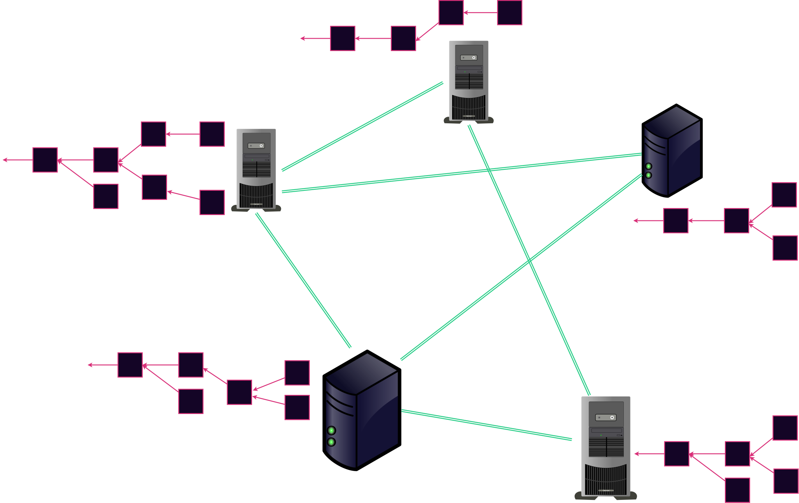

<!DOCTYPE html>
<html lang="en">

<head>
  <meta charset="utf-8" />
  <meta name="viewport" content="width=device-width, initial-scale=1.0, maximum-scale=1.0, user-scalable=no" />

  <title>Substrate's Transaction Pool and its Runtime API</title>
  <link rel="shortcut icon" href="./../../assets/favicon.ico" />
  <link rel="stylesheet" href="./../../dist/reset.css" />
  <link rel="stylesheet" href="./../../dist/reveal.css" />
  <link rel="stylesheet" href="./../../assets/styles/PBA-theme.css" id="theme" />
  <link rel="stylesheet" href="./../../css/highlight/shades-of-purple.css" />

  <link rel="stylesheet" href="./../.././assets/styles/custom-classes.css" />

</head>

<body class="site">
  <header class="site-header">
    <!-- This logo is a link only on the watching server, not the production build -->
    <a href="">
      
    </a>
  </header>
  <main class="reveal">
    <article class="slides">
      <section  data-markdown><script type="text/template">

# Substrate's Transaction Pool
</script></section><section ><section data-markdown><script type="text/template">
## Transaction Pools

<pba-cols>
<pba-col>


</pba-col>

<pba-col>
 <!-- .element: class="fragment" -->
</pba-col>

<pba-col>
 <!-- .element: class="fragment" -->
</pba-col>

</pba-cols>

<aside class="notes"><p>The blockchain produces blockspace, and users buy that blockspace.
Why do they buy it?
So they can contribute to the shared story.
So they can interact with the shared state machine.
You can think of these users standing in line with transactions in their hand, waiting for the chance to put their transactions into the chain&#39;s blockspace.
Sometimes the demand for blockspace is low and the queue is short.
In this case the queue gets completely emptied each time a new block is created.
Other times it gets long and backed up.
Then when a block comes, only a part of the queue gets emptied.</p>
<p>This simple model provides some good intuition about how the transaction pool works, but it is a bit simplified.</p>
<p>First, It is actually a priority queue.
You can jump the line by offering to bribe the block producers.</p>
<p>Second, it is more accurate to think of the transactions themselves waiting in line, not the users who sent those transactions.</p>
<p>Let&#39;s take a closer look.</p>
</aside></script></section><section data-markdown><script type="text/template">
### Paths of a Transaction



<aside class="notes"><p>Previously, in the blockchain module, we saw this figure.
It points out that each node has its own view of the blockchain.
Now I&#39;ll show you another layer of detail which is that each node also has its own transaction pool
CLICK</p>
</aside></script></section><section data-markdown><script type="text/template">
### Paths of a Transaction


<aside class="notes"><p>There are many paths a transaction can take from the user who signed it to a finalized block.
Let&#39;s talk through some.
Directly to user&#39;s authoring node and into chain is simplest.
Could also be gossiped to other author.
Could even go in a block, get orphaned off, back to tx pool, and then in a new block</p>
</aside></script></section><section data-markdown><script type="text/template">
### Pool Validation

- Check signature
- Check that sender can afford fees
- Make sure state is ready for application

<aside class="notes"><p>When a node gets a transaction, it does some light pre-validation sometimes known as pool validation.
This checking determines whether the transactions is {valid now, valid in some potential future, invalid}.
There is periodic re-validation if transactions have been in the pool for a long time.</p>
</aside></script></section><section data-markdown><script type="text/template">
### Pool Prioritization

- Priority Queue
- Prioritized by...
  - Fee
  - Bribe
  - Fee per blockspace
- This is all off-chain

<aside class="notes"><p>There are a few more things the Substrate tx pool does too, and we will look at them in detail soon.</p>
</aside></script></section></section><section ><section data-markdown><script type="text/template">
## Tx Pool Runtime Api

```rust
pub trait TaggedTransactionQueue<Block: BlockT>: Core<Block> {
    fn validate_transaction(
        &self,
        __runtime_api_at_param__: <Block as BlockT>::Hash,
        source: TransactionSource,
        tx: <Block as BlockT>::Extrinsic,
    ) -> Result<TransactionValidity, ApiError> { ... }
}
```

[`TaggedTransactionQueue` Rustdocs](https://paritytech.github.io/substrate/master/sp_transaction_pool/runtime_api/trait.TaggedTransactionQueue.html)

Introduced in [paritytech/substrate#728](https://github.com/paritytech/substrate/issues/728)

<aside class="notes"><p>This is another runtime api, similar to the block builder and the core that are used for creating and importing blocks.
Like most others, it requires that the Core api also be implemented.</p>
<p>This one is slightly different in that it is actually called from off-chain, and is not part of your STF.
So let&#39;s talk about that for a little bit.</p>
</aside></script></section><section data-markdown><script type="text/template">
### Runtime vs STF


<aside class="notes"><p>It is commonly said that the runtime is basically your STF.
This is a good first order approximation.
It is nearly true.</p>
</aside></script></section><section data-markdown><script type="text/template">
### Runtime vs STF


<aside class="notes"><p>But as we can see here, when we put our glasses on, actually only some of the apis are part of the stf.</p>
</aside></script></section><section data-markdown><script type="text/template">
## Why is pool logic in the runtime?

- Transaction type is Opaque
- Runtime logic is opaque
- You must understand the transaction to prioritize it

<aside class="notes"><p>So if this is not part of the STF why is it in the runtime at all?
This logic is tightly related to the runtime application logic.
The types are opaque outside of the runtime.
So this logic must go in the runtime.</p>
<p>But if it is not on-chain, can individual validators customize it.
In short yes.
There is a mechanism for this.
We won&#39;t go deeply into the mechanism, but validators can specify alternate wasm blocs to use instead of the official one.</p>
</aside></script></section></section><section ><section data-markdown><script type="text/template">
## Jobs of the API

- Make fast pre-checks
- Give the transaction a priority
- Determine whether the transaction is ready now or may be ready in the future
- Determine a dependency graph among the transactions

<aside class="notes"><p>So we spoke earlier about the jobs of a transaction pool in general.
Specifically the pre-checks and the priority
Here is a more specific list of tasks that Substrate&#39;s TaggedTransactionPool does.</p>
<p>The second two points are the new additions, and they are the duty of the &quot;tags&quot; after which the tagged transaction queue is named.</p>
<p>The results of all of this are returned to the client side through a shared type <code>ValidTransaction</code> or <code>InvalidTransaction</code></p>
</aside></script></section><section data-markdown><script type="text/template">
### `ValidTransaction`

```rust
pub struct ValidTransaction {
    pub priority: TransactionPriority,
    pub requires: Vec<TransactionTag>,
    pub provides: Vec<TransactionTag>,
    pub longevity: TransactionLongevity,
    pub propagate: bool,
}
```

[`ValidTransaction` Rustdocs](https://paritytech.github.io/substrate/master/sp_runtime/transaction_validity/struct.ValidTransaction.html)

<aside class="notes"><p>We indicate that the transaction passes the prechecks at all by returning this valid transaction struct.
If it weren&#39;t even valid, we would return a different, <code>InvalidTransaction</code> struct.
You learned yesterday how to navigate the rustdocs to find the docs on that one.</p>
<p>Priority we&#39;ve discussed.
It is worth noting that the notion of priority is intentionally opaque to the client.
The runtime may assign this value however it sees fit.</p>
<p>Provides and requires all forming a dependency graph between the transactions.
Requires is a list of currently unmet dependency transactions.
This transaction will be ready in a future where these dependencies are met so it is kept in the pool.</p>
<p>A simple intuitive example of this is payments.
Image alice pays bob some tokens in transaction1.
Then bob pays those same tokes to charlie in transaction2.
trasnaction2 will be valid only after transaction1 has been applied.
It is a dependency.</p>
<p>Longevity is a field I&#39;m not so familiar with.
It is how long the transaction should stay in the pool before being dropped or re-validated.
TODO what are the units? How does one set it?</p>
<p>And finally whether the transaction should be gossiped.
This is usually true.
Only in special edge cases would this be false.</p>
</aside></script></section><section data-markdown><script type="text/template">
### Example 1: UTXO System


<aside class="notes"><p>Prioritize by implicit tip (difference of inputs and outputs)
Requires all missing input transactions
provides this input</p>
</aside></script></section><section data-markdown><script type="text/template">
### Example 2: Nonced Account System


<aside class="notes"><p>Prioritize by explicit tip
Requires all previous nonces for this account
provides this nonce for this account</p>
<p>This demonstrates one of the biggest downsides of the Accounts system.
Transactions cannot deterministically specify the initial state on which they operate.
There is only an inherent ordering between transactions from the same account.</p>
</aside></script></section><section data-markdown><script type="text/template">
## Always Re-check On-chain


<aside class="notes"><p>None of this new pool information changes the fundamentals you learned last week.
You must execute the state transitions in full on chain.</p>
<p>Most of the time you are not the block author.
When you import a block from another node, you cannot trust them to have done the pre-checks correctly.</p>
</aside></script></section></section>
    </article>
  </main>

  <script src="./../../dist/reveal.js"></script>

  <script src="./../../plugin/markdown/markdown.js"></script>
  <script src="./../../plugin/highlight/highlight.js"></script>
  <script src="./../../plugin/zoom/zoom.js"></script>
  <script src="./../../plugin/notes/notes.js"></script>
  <script src="./../../plugin/math/math.js"></script>

  <script src="./../../assets/plugin/mermaid.js"></script>
  <script src="./../../assets/plugin/mermaid-theme.js"></script>

  <script src="./../../assets/plugin/chart/chart.js"></script>
  <script src="./../../assets/plugin/chart/chart.min.js"></script>

  <script src="./../../assets/plugin/tailwindcss.min.js"></script>

  <script>
    function extend() {
      var target = {};
      for (var i = 0; i < arguments.length; i++) {
        var source = arguments[i];
        for (var key in source) {
          if (source.hasOwnProperty(key)) {
            target[key] = source[key];
          }
        }
      }
      return target;
    }

    // default options to init reveal.js
    var defaultOptions = {
      controls: true,
      progress: true,
      history: true,
      center: true,
      transition: 'default', // none/fade/slide/convex/concave/zoom
      slideNumber: true,
      mermaid: {
        startOnLoad: false,
        logLevel: 3,
        theme: 'base',
        themeVariables: {
          primaryColor: purple,
          primaryTextColor: white,
          primaryBorderColor: pink,
          lineColor: pink,
          secondaryColor: lightPurple,
          tertiaryColor: lightPurple,
        },
      },
      chart: {
        defaults: {
          color: 'lightgray', // color of labels
          scale: {
            beginAtZero: true,
            ticks: { stepSize: 1 },
            grid: { color: "lightgray" }, // color of grid lines
          },
        },
        line: { borderColor: ["#ccc", "#E6007A", "#6D3AEE"], "borderDash": [[5, 10], [0, 0]] },
        bar: { backgroundColor: ["#ccc", "#E6007A", "#6D3AEE"] },
      },
      plugins: [
        RevealMarkdown,
        RevealHighlight,
        RevealZoom,
        RevealNotes,
        RevealMath,
        RevealMermaid,
        RevealChart
      ]
    };

    // options from URL query string
    var queryOptions = Reveal().getQueryHash() || {};

    var options = extend(defaultOptions, {"width":1400,"height":900,"margin":0,"minScale":0.2,"maxScale":2,"transition":"none","controls":true,"progress":true,"center":true,"slideNumber":true,"backgroundTransition":"fade"}, queryOptions);
  </script>


  <script>
    Reveal.initialize(options);
  </script>
</body>

</html>